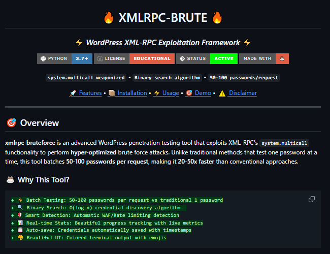
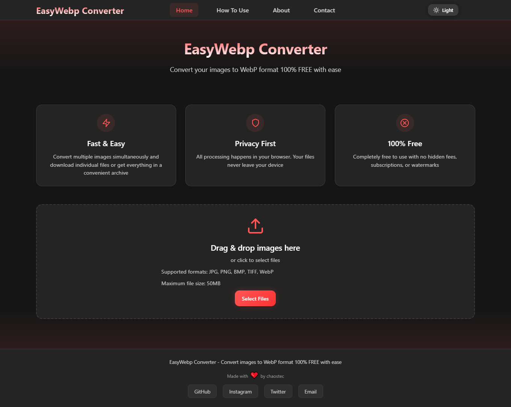

███ █████
░░░ ░░███
████████ ████████ ██████ █████ ██████ ██████ ███████ █████
░░███░░███░░███░░██ ███░░███░░███ ███░░██ ███░░███░░░███░ ███░░
░███ ░███ ░███ ░░░░███ ░███ ░███░███████░███ ░░░ ░███ ░░█████
░███ ░███ ░███ ░███ ░███ ░███░███░░░ ░███ ███ ░███ ███░░░░███
░███████ █████ ░░██████ ░███░░██████░░██████ ░░█████ ██████
░███░░░ ░░░░░ ░░░░░░ ░███ ░░░░░░ ░░░░░░ ░░░░░ ░░░░░░
░███ ███ ░███
█████ ░░██████
░░░░░ ░░░░░░




1 / 3